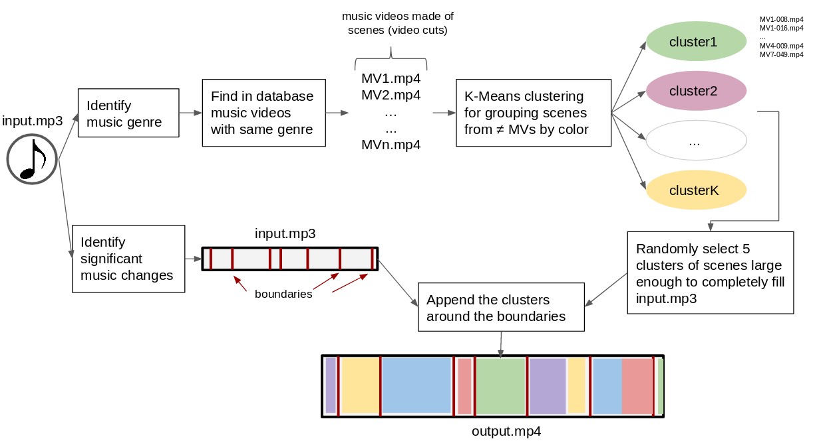

Generate a Music Video from Youtube extracts !
This works better with famous musics like pop, rock, hip-hop ...
Gallery
How does it work
This python algorithm takes in input a music, and outputs a Music Video which fits the input music, made from segments of Youtube MVs. This project was made in the wake of a Master Thesis in the Machine Learning department of Tsinghua University.
The database
For the algorithm to work, you must have a data folder containing, for each video :
- the video file (ex: video1.mp4)
- a folder of the name name (ex: video1/) containing :
- all the video scenes from this video (ex: video1_001.mp4, video1_002.mp4, ...)
- for each video scene file, a json file with 2 keys : its color histogram (array size 768) and its length in seconds
All this is explained on the project github.

About
This project was done by Sarah Gross in the wake of her Master Thesis research at Tsinghua University, Beijing, China.
After a bachelor in engineering at CentraleSupélec, France, Sarah deepened her knowledge in computer science through several professional experiences and projects. She now pursues a dual-degree in Advanced Computing at the Machine Learning lab of Tsinghua University, China.
Acknowledgments
We are grateful to Xingxing Wei for his valuable advice throughout this research,
and to Hippolyte Barrault for his help with this website.